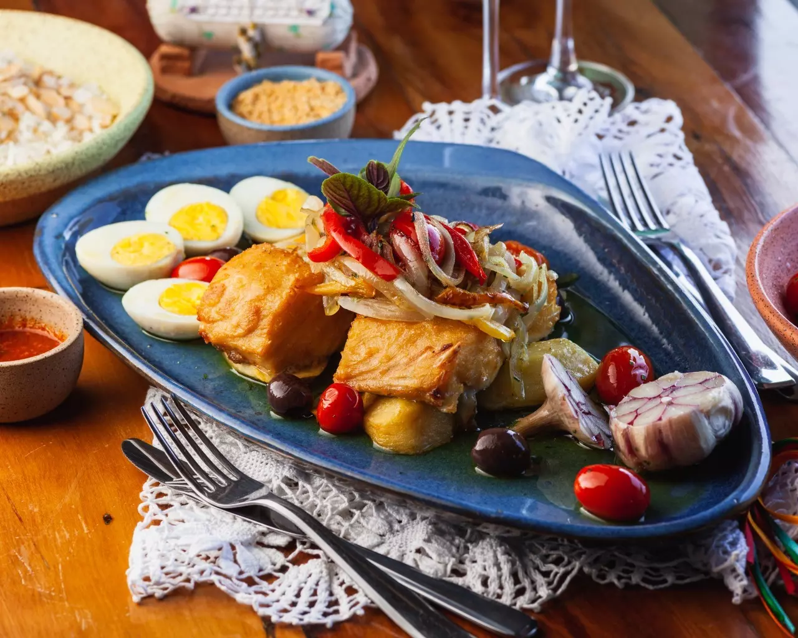
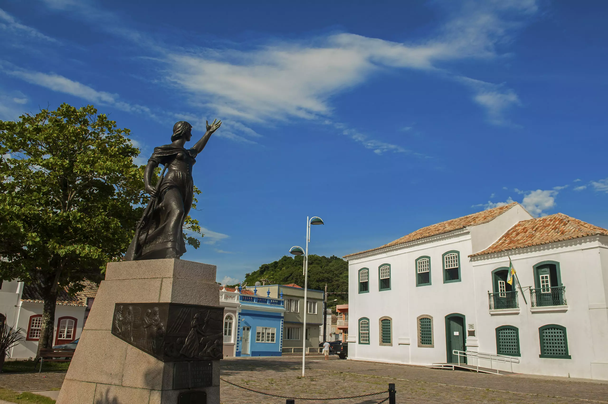

Culinária
Explore a deliciosa culinária de Laguna, com pratos tradicionais e frutos do mar frescos.
Hospedagem
Encontre opções de hospedagem confortáveis e aconchegantes para sua estadia em Laguna.

Pontos Turísticos
Descubra os encantos naturais e históricos de Laguna, com suas belas praias e centro histórico.
Gastronomia:
Restaurante Caiçara
Por que pedir?
Em excelente localização, com ambiente climatizado, salão amplo, que possibilita um rápido atendimento, o restaurante oferece aos domingos um rico buffet com variedade de carnes e frutos do mar.
O que pedir?
Para os apreciadores de carne, o churrasco na chapa é um dos destaques do cardápio da casa. Acompanhado de salada, arroz, fritas e farofa, o prato serve tranquilamente para duas pessoas.
Avenida Senador Galotti, 712 – Mar Grosso
Telefone: (48) 3647-1643
Geraldo Restaurante
Por que pedir?
Aproveitar um dia de sol, apreciar uma vista diferenciada e saborear os pratos típicos da cidade. Opções de porções ou pratos com acompanhamentos.
O que pedir?
Prove as porções de ostra gratinada, camarão a alho e óleo, ou ainda um dos peixes da casa, acompanhados de arroz, feijão, fritas, pirão e salada.
Rua Dezesseis, 922 -Ponta da Barra
Telefone: (48) 3647-5026
Mix Chopperia
Por que pedir?
Apesar de levar o nome de Chopperia, o Mix faz as honras também como restaurante. O potencial da cozinha, pode ser visto através dos pratos a à la carte.
O que pedir?
O cardápio entre outras iguarias, apresenta o linguado à belle muniere, que consiste no linguado grelhado com camarão, aspargos e alcaparras, arroz, batata souté e salada.
Avenida Senador Galotti, 617 – Mar Grosso
Telefone/Delivery: (48) 3647-2202
Hospedagem:
Hotel Turístico Samba Laguna
Com acesso privativo à Praia do Gi, este hotel oferece piscina aquecida, boate, academia e restaurante panorâmico. Os quartos incluem varanda com vista, WiFi gratuito nas áreas comuns e estacionamento gratuito. Com vista para o mar ou para o lago, os quartos do Samba Laguna Tourist Hotel dispõem de TV a cabo. A casa de banho privativa inclui um duche. O centro da cidade de Laguna e a estação rodoviária local estão localizados a cerca de 9 km. A Pedra do Frade fica a 7 km do Laguna Tourist.
Ravena Cassino Hotel

Na Praia do Mar Grosso, o Ravena Casino é um dos maiores hotéis do sul do Brasil. As comodidades incluem uma piscina exterior com vista panorâmica para o mar, acesso Wi-Fi gratuito e estacionamento gratuito. Os quartos do Ravena Casino Hotel são agradáveis, com roupas de cama floridas e varandas privativas com vistas panorâmicas do jardim ou do mar. Todos estão equipados com TV a cabo e ventilador de teto. Os hóspedes do Casino Ravena podem relaxar nos extensos jardins do hotel, com redes e palmeiras frondosas. Também podem desfrutar de jogos de bilhar. O restaurante à carta serve uma variedade de pratos de marisco fresco e os hóspedes podem pedir um cocktail tropical enquanto estão deitados na praia. Um buffet de pequeno-almoço diário é servido. O Ravena está localizado na região de Laguna, a 120 km de Florianópolis. Como serviço de transporte para o aeroporto está disponível.
Residencial Maria
Localizada em Laguna, a Residencial Maria oferece acomodações com sacada ou varanda térrea, Wi-Fi gratuito e TV de tela plana, bem como piscina ao ar livre sazonal e jardim.
Para maior comodidade, a propriedade pode fornecer toalhas e roupa de cama por um custo extra.
Os hóspedes deste alojamento de acomodação e pequeno-almoço podem desfrutar de um buffet ou de um pequeno-almoço continental.
A Praia do Mar Grosso fica a 7 minutos a pé do Residencial Maria. O aeroporto mais próximo é o Aeroporto Humberto Ghizzo Bortoluzzi, a 56,3 km do alojamento.
Pontos turísticos:
Farol de Santa Marta
O Farol de Santa Marta é considerado o maior das Américas e o terceiro do mundo em alcance. Se localiza a 17 km do centro da cidade e atrai muitos turistas ao local por suas belas paisagens.
A vista de cima do Morro do Céu é espetacular e imperdível. O Cabo de Santa Marta é cercado por praias, com as melhores ondas do país, atraindo os praticantes do surf e do sandboard.
Molhes da Barra
Quebra-mar de pedras com 2 Km de extensão, na Barra do Rio Tubarão e Lagoa do Imaruí, que avança no mar. É um ótimo local para pesca ou à simples contemplação da paisagem. De lá pode-se avistar a pesca com auxílio dos golfinhos e onde os surfistas procuram o local pela perfeita formação das ondas.
Pedra do Frade
Localizada na extremidade da Praia do Gi, a famosa pedra desafia a lei da gravidade ao sustentar-se sobre uma superfície inclinada. Essa formação rochosa de 9 metros de altura e 5 metros de diâmetro, que recebeu o este nome pela semelhança com um padre franciscano.
Molhes da Barra
Quebra-mar de pedras com 2 Km de extensão, na Barra do Rio Tubarão e Lagoa do Imaruí, que avança no mar. É um ótimo local para pesca ou à simples contemplação da paisagem. De lá pode-se avistar a pesca com auxílio dos golfinhos e onde os surfistas procuram o local pela perfeita formação das ondas.
Centro histórico de Laguna

Hoje o Centro Histórico apresenta em torno de 600 casarios e monumentos históricos tombados desde 1978, pela Prefeitura de Laguna. Em novembro de 1985 foram tombados também pelo Instituto do Patrimônio Histórico e Artístico Nacional (IPHAN). Conheça algumas das principais atrações do centro histórico